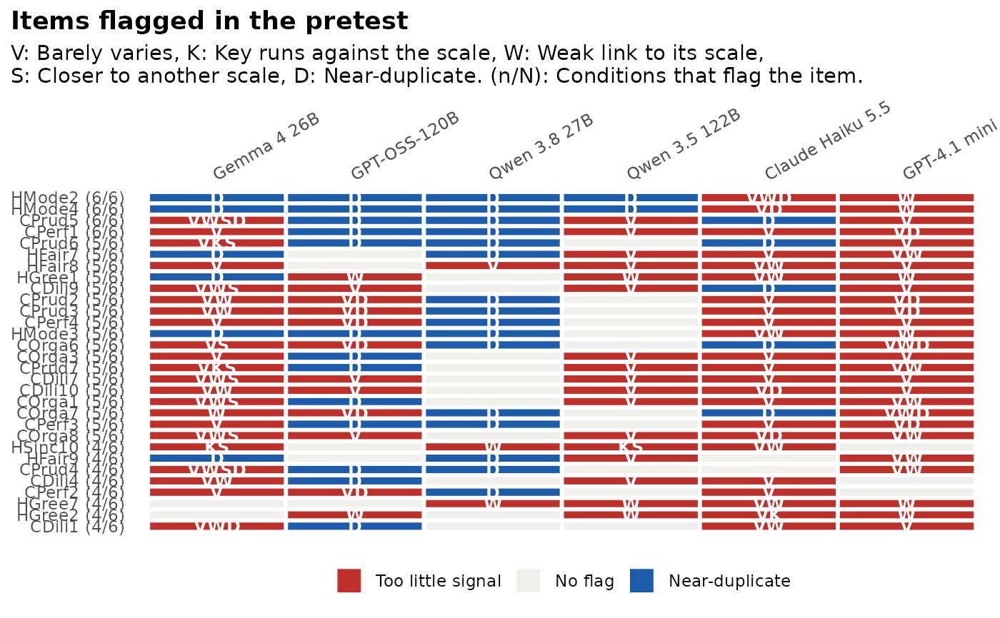

Pretest a scale on synthetic respondents, without real data
Source:R/pretest.R
synthetic_pretest.Rdsynthetic_pretest() is for the stage before any real
data exist. It runs a standard item analysis on synthetic respondents and
flags items worth a second look. It is pilot screening, not
validation: Language models answer more tidily than people (see
authenticity_benchmark() on the HEXACO data), so a clean result here
does not show that a scale works in people. Items that fail even with
tidy respondents are the ones to rewrite first.
Usage
synthetic_pretest(
synthetic,
items,
by = "model",
scale_range = NULL,
irt = TRUE,
n_pa = 20,
thresholds = list(),
seed = 1
)Arguments
- synthetic
synthetic respondents: A data frame with one row per respondent, the item columns, the
bycolumn(s) and optionally anattemptcolumn (as fromgenerate_synthetic()or hexaco_llm), or a named list with one element per condition, each a data frame or a list of attempts (as inauthenticity_benchmark()).- items
the item table:
item,scale(ortrait), and optionallyreverse(as in hexaco_items). Ansc_instrument()also works, and then givesscale_rangetoo. Without ascalecolumn, all items form one scale.- by
the column(s) of a data frame
syntheticthat define the conditions. Several columns are joined with" / ". A data frame without these columns is one condition,"Data".- scale_range
the lowest and highest response categories, used to key reverse items.
NULLtakes them from the instrument or the data.- irt
fit a graded response model per scale and condition with mirt to get the slopes? It is the slowest step.
- n_pa
number of random data sets for parallel analysis.
- thresholds
a named list that changes any of the defaults
list(sd = 0.5, top_share = 0.9, item_rest = 0.3, slope = 0.5, redundant = 0.85).- seed
random seed (parallel analysis).
Value
An object of class sc_pretest: A list with summary (one row
per condition: attempts, n, items, flagged, alpha (mean over
scales), scales, n_factors, own_scale, reverse_ok), items
(one row per condition and item, with the statistics, the logical flag
columns, flags (the labels) and attempt_share), scales (one row
per condition and scale), agreement, stability and settings. It
has print(), tidy() and autoplot() methods, and
summarise_pretest() describes it in plain language.
Details
Item and scale screening. For every item, on the keyed answers
(reverse-keyed items recoded as (min + max) - x): The mean and SD, the
share of answers in the most common category (top_share), the
item-rest correlation with the other items of its scale, alpha when the
item is dropped, its highest absolute correlation with any other item
(max_r, with that item as twin) and, with irt = TRUE, the slope of
a graded response model fitted by mirt to each scale (slope; NA
when the model fails or the slope is beyond 10, which synthetic answers
that are close to deterministic can produce). For
every scale: Cronbach's alpha, the mean inter-item correlation and the
number of dimensions that parallel analysis finds (n_factors).
Flags. An item is flagged as
low_variance("Barely varies") when its SD is belowthresholds$sdortop_shareis at leastthresholds$top_share;key("Reverse key not working" for reverse-keyed items, "Runs against its scale" for the others) when its keyed item-rest correlation is below 0;weak("Weak link to its scale") when the item-rest correlation is belowthresholds$item_rest, or the slope is belowthresholds$slope;other_scale("Closer to another scale") when the item correlates more with another scale's score than with the rest of its own scale;redundant("Near-duplicate") whenmax_ris at leastthresholds$redundant.
Expected structure. The scale and reverse columns of items are
the structure you designed. summary reports, for each condition, the
share of items that relate most to their own scale (own_scale), the
share of reverse-keyed items whose key comes through (reverse_ok), and
how many dimensions parallel analysis finds over all items
(n_factors) next to the number of scales you designed (scales).
Stability. Each value of by is a condition: A model, a
temperature, a prompt wording or a persona set. Give each run its own
label in that column (for example "Haiku, wording B"). The flags are
computed on the pooled attempts of each condition and again in every
single attempt. agreement has one row per item: In how many conditions
it is flagged (flagged_in) and the share of single attempts that flag
it (attempt_share, a check on sampling noise). stability compares
every pair of conditions: The rank correlation of their item-rest
correlations (rho) and the overlap of their flagged items
(jaccard). Flags shared by most conditions are the ones to act on.
The settings and the item table are kept in the result, so the same
synthetic data can be compared with real data later with
authenticity_benchmark() once real responses are in.
The function works on any responses, so running it on real data shows which synthetic flags hold in people (see the tutorial "Pretesting a scale without real data").
References
Horn, J. L. (1965). A rationale and test for the number of factors in factor analysis. Psychometrika, 30(2), 179-185.
Examples
h <- hexaco_items[hexaco_items$trait %in% c("H", "C"), ]
ca <- hexaco_llm[hexaco_llm$country == "Canada" & hexaco_llm$attempt <= 3, ]
pt <- synthetic_pretest(ca, h, irt = FALSE, n_pa = 5)
pt
#> Pretest without real data: Pilot screening, not validation
#> 80 items in 2 scales, 6 conditions.
#>
#> condition attempts n items flagged alpha scales n_factors own_scale
#> Gemma 4 26B 3 1500 80 72 0.83 2 9 0.82
#> GPT-OSS-120B 3 1500 80 51 0.96 2 11 1.00
#> Qwen 3.8 27B 3 1450 80 20 0.97 2 7 1.00
#> Qwen 3.5 122B 3 1500 80 24 0.94 2 9 0.99
#> Claude Haiku 5.5 3 1500 80 70 0.91 2 12 1.00
#> GPT-4.1 mini 3 1500 80 64 0.86 2 15 0.99
#> reverse_ok
#> 0.89
#> 1.00
#> 1.00
#> 0.98
#> 1.00
#> 1.00
#>
#> Flagged items (80), most often first:
#> item scale flagged_in
#> HMode2 H 6
#> HMode4 H 6
#> CPrud5 C 6
#> CPerf1 C 6
#> CPrud6 C 5
#> HFair7 H 5
#> HFair8 H 5
#> HGree1 H 5
#> CDili9 C 5
#> CPrud2 C 5
#> flags
#> Near-duplicate, Weak link to its scale, Barely varies
#> Near-duplicate, Barely varies, Weak link to its scale
#> Near-duplicate, Barely varies, Weak link to its scale, Closer to another scale
#> Barely varies, Near-duplicate
#> Near-duplicate, Barely varies, Reverse key not working, Closer to another scale
#> Barely varies, Near-duplicate, Weak link to its scale
#> Barely varies, Weak link to its scale
#> Weak link to its scale, Barely varies, Near-duplicate
#> Barely varies, Weak link to its scale, Closer to another scale, Near-duplicate
#> Barely varies, Near-duplicate, Weak link to its scale
#> ... and 70 more in `$agreement`.
#>
#> flagged: Items with at least one flag; own_scale: Share of items closest to their own scale;
#> reverse_ok: Share of reverse-keyed items whose key comes through;
#> n_factors: Dimensions by parallel analysis over all items (designed: `scales`).
summarise_pretest(pt)
#> Pretest without real data, in plain language
#>
#> This is pilot screening on synthetic respondents only. It flags items
#> worth a second look; it does not show that the scale works in people.
#>
#> 80 of 80 items are flagged in at least one condition, and 4 in all 6
#> conditions. Flagged most often: HMode2 (near-duplicate, weak link to
#> its scale, barely varies), HMode4 (near-duplicate, barely varies, weak
#> link to its scale), CPrud5 (near-duplicate, barely varies, weak link to
#> its scale, closer to another scale), CPerf1 (barely varies,
#> near-duplicate) and CPrud6 (near-duplicate, barely varies, reverse key
#> not working, closer to another scale). 13 of the flagged items are
#> flagged in fewer than half of the single attempts, so their flags may
#> be sampling noise. When most items are flagged, the flags describe the
#> model's tidy answers as much as the items. Start with the items that
#> most conditions agree on.
#>
#> The conditions disagree on which items link weakly to their scale (mean
#> rank correlation 0.16) and share 43% of their flagged items on average.
#>
#> 82% to 100% of the items relate most to the scale they were written for
#> (range over conditions). The reverse key comes through for 89% to 100%
#> of the reverse-keyed items. You designed 2 scales; parallel analysis
#> finds 7 to 15 dimensions over all items.
#>
#> Alpha is below 0.7 for C in Gemma 4 26B. Alpha is 0.95 or higher in 7
#> of 12 scale results. Synthetic respondents are often more consistent
#> than people, so expect lower values in real data.
#>
gg_pretest(pt)

# \donttest{
# with the graded response model slopes (slower)
pt <- synthetic_pretest(ca, h)
# }